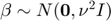
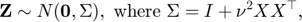
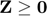
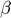
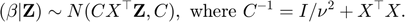
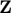
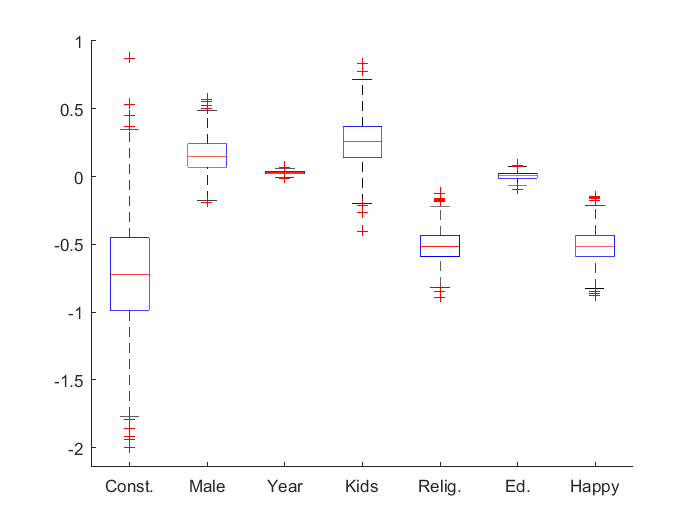

Exact Simulations for the Bayesian Posterior of the Probit Regression
Example uses the extramarital affairs dataset from Ray C. Fair, Journal of Political Economy Vol. 86, No. 1 (Feb., 1978), pp. 45-61
Let the prior be . We first simulate

conditional on . Then, we simulate the posterior regression coefficients, , of the Probit regression

load('private\affairs.csv'); % load data Y = affairs(:,1); X = affairs(:,2:end); % response and design matrix [m, d] = size(X); % dimensions of problem X=diag(2*Y-1)*X; % incorporate response into design matrix nu=sqrt(5); % prior scale parameter C=inv(eye(d)/nu^2+X'*X);L=chol(C,'lower');Sig=eye(m)+nu^2*X*X'; % this is covariance of Z given beta l=zeros(m,1);u=inf(m,1);est=mvNcdf(l,u,Sig,10^5);
Warning: Method may fail as covariance matrix is close to singular!
estimate the reciprocal of acceptance probability
est.upbnd/est.prob
ans = 216.6643
sample  from the truncated multivariate normal
tic z=mvrandn(l,u,Sig,10^2); toc
Warning: Method may fail as covariance matrix is close to singular! Elapsed time is 21.546320 seconds.
to speed up the simulation apply a different variable reordering via cholorth.m
tic z=mvrorth(l,u,Sig,10^3); toc
Elapsed time is 36.681407 seconds.
simulate given and plot boxplots of marginals
beta=L*randn(d,size(z,2))+C*X'*z; boxplot(beta','labels', ... {'Const.' 'Male' 'Year' 'Kids' 'Relig.' 'Ed.','Happy'}), box off